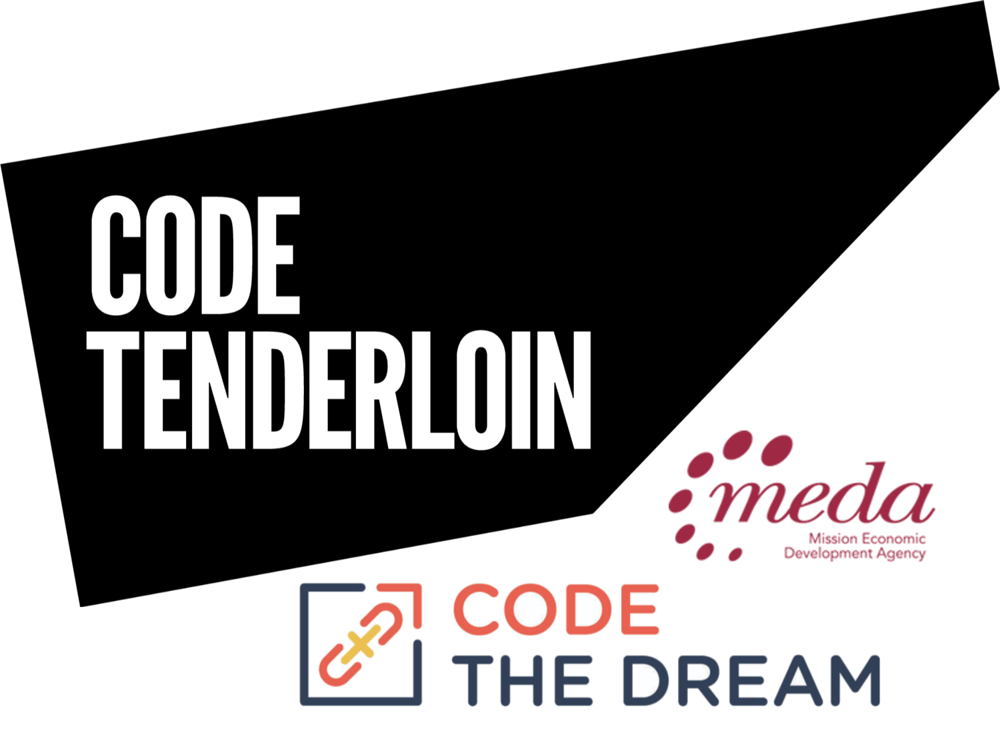
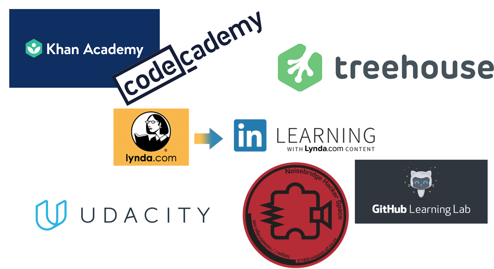

Make School "Dominican university" | CS Bachelors Degree

- Bachelors degree in applied computer science 2022 at Make School accredited through Dominican University of California.
- Make School is located in the city of San Francisco CA, on 555 Post St.
- Make School website: MakeSchool.com
- Concentrations include but are not limited to mobile development, web development (full stack) & data science/machine learning.
- Languages & frameworks include but are not limited to Python, JavaScript, Swift, Go, Flask, Django, Node.js, React.js, UIKit, CoreData, Foundation, NumPy, Pandas, Scikit-Learn, Keras & TensorFlow.
DVC | UX Design
- I took certificate classes at Diablo Valley College in UX Design.
- DVC is located in the PleasantHill, CA.
- DVC website: www.dvc.edu
- Concentrations include but are not limited to ArtDM, Web Design, UI/UX Design, Art Drawing & Math.
- Educated on Photoshop (intro & advanced), Dreamweaver, HTML, Drawing 1 & 2, advanced math & more.
Code TL, CTD & Meda MT | Coding Bootcamp
- Top student in the Code Tenderloin programming bootcamp.
- The Code TL bootcamp focused on JavaScript.
- My Code The Dream bootcamp focus was on Ruby.
- Code TL bootcamp was a two part program about one month for both. Completing the intro to JavaScript, then moving to Javascript advanced. I did so well I got to skip the beginning of the second class & move right into the middle of it.
- Code TL got me accepted to Make School, a program that gives you a two year Bachelor's degree applied in Computer Science.
- I got accepted into CTD's programming bootcamp, a very competitive six month Ruby class that come with an internship.
- At the Programming Bootcamp Meda Mission techies I study HTML, CSS, JavaScript, Node.js & more
- Meda MT was an 8-week long program 5 days a week.
Online & in Person Courses | Software Engineering
- Courses taken at or on Linda.com also known as “LinkedIn Learning”, TeamTreeHouse.com, Udacity, Khan Academy, CodeCademy.com, GitHub Learning Lab, Noisebridge & More.
- I Sharpened my skills significantly though many online courses. This happened because I am a very dedicated person who has spent many days getting up in the morning going down to the coffee shop and staying their studying programing until it closes.
- Did great in my Python, C# & React.js Classes. I took classes at Noisebridge in Python & C#. The C# Class gave me good knowledge of the game engine Unity.
SRVHS & Vanguard | High School Diploma

- Top student in the film class at The Vanguard School. During this class we learned different computer skills that have come in handy while learning programing.
- Took a keyboarding class in high school that has made me a much faster typer than the average person.
- One of just a few people who gave a graduation speech. Having given such a task I am much more confident in all that I do.